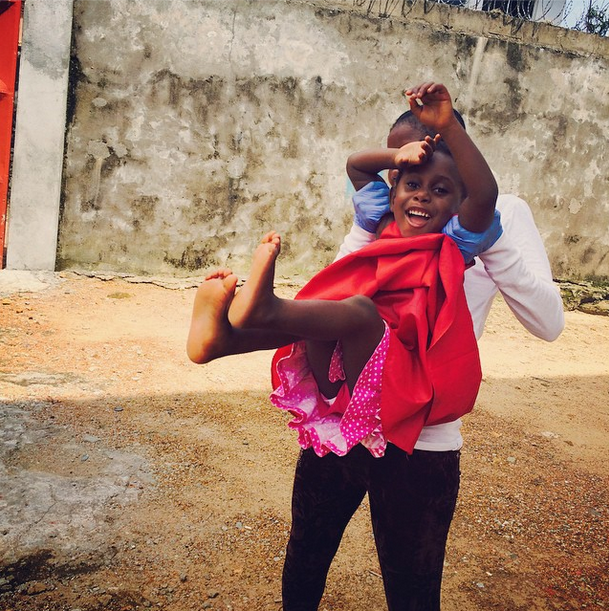

<!DOCTYPE html>
<html>
<head>

	<!-- <!DOCTYPE html>
<html lang="en">
  <head> -->
    <meta charset="utf-8">
    <meta http-equiv="X-UA-Compatible" content="IE=edge">
    <meta name="viewport" content="width=device-width, initial-scale=1">
    <title>StoryStreams</title>

    <!-- Bootstrap -->
    <link href="css/bootstrap.min.css" rel="stylesheet">

    <!-- HTML5 shim and Respond.js for IE8 support of HTML5 elements and media queries -->
    <!-- WARNING: Respond.js doesn't work if you view the page via file:// -->
    <!--[if lt IE 9]>
      <script src="https://oss.maxcdn.com/html5shiv/3.7.2/html5shiv.min.js"></script>
      <script src="https://oss.maxcdn.com/respond/1.4.2/respond.min.js"></script>
    <![endif]-->
    	<link rel="stylesheet" type="text/css" href="style/style.css">
  </head>
  <body>
    <!-- <h1>Hello, world!</h1> -->

    <!-- jQuery (necessary for Bootstrap's JavaScript plugins) -->
    <script src="https://ajax.googleapis.com/ajax/libs/jquery/1.11.1/jquery.min.js"></script>
    <!-- Include all compiled plugins (below), or include individual files as needed -->
    <script src="js/bootstrap.min.js"></script>
  <!-- <div class= "container"> -->
  </body>

</html>
</head>
	<body>
		<div container>
		<div id='heading'>
				<!--  -->
			
				<h1 id='tr1' class='heading'> <center>Story Streams</center></h1>
				<a href=//https://www.twitter.com/Pdez90><strong><center>Twitter handle</center></strong></a><br/>
				<a href=//https://www.facebook.com/priyanka.desouza.5> Facebook </a>	

		</div>
		<h2> What we do:</h2> 
		<h3>We share stories of real people who live in hard places to develop real connections between people. We believe that stories are the best way to motivate behaviour change </h3>
		<!-- </div> -->
		<div class="with_yellow row">
			<div class="col-md-6">
				
			</div>
			<div class="col-md-6">
				<h3>
					Sarah's parents died from Ebola, leaving Sarah an orphan. Sarah's relatives refused to take her in because they
					were afraid of contracting Ebola. More Than Me took Sarah in. They kept her with them for the quarantine period of 21 days. At the end, they helped reintegrate Sarah back into the community.  <br/>			
				</h3>		
		   </div>
	    </div>
		
		<div>
			<h2> These are some of the organizations working in Liberia from whom we source our stories from </h2>
		</div>

		<div class="row">
			<div class="col-md-6">
				<h3>Organizations</h3> 
			</div>
			<div class="col-md-6">
				<h3>Mission</h3>			
			</div>
		</div>

		<div class= "row">
			<div class="col-md-6">
				<h3><a href=https://morethanme.org/>More Than Me</a></br></br></br></h3>
			</div>
			<div class="col-md-6"><h3>
				1) Quarantine Orphans </br>
				2) Reintegrate them into the community </br>
				3) Aid healthworkers </br> </h3>
			</div>
		</div>

		<div class="row">
			<div class="col-md-6">
			<h3>UNICEF</h3>
		    </div>
		    <div class="col-md-6">
		    	<h3>Helping children in hard places</h3>
		    </div>
		 </div>


		
	    
		
		
	</div>	
	</body>
<!-- </div> -->
</html>